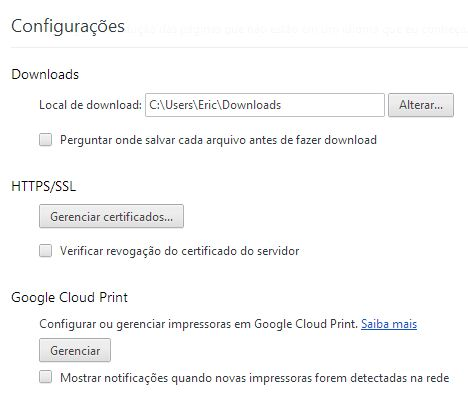
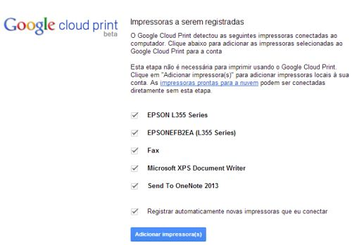
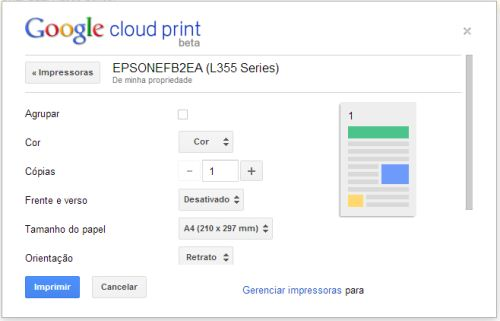

As impressoras domésticas estão cada vez mais integradas a redes locais e dispositivos móveis. Mas ainda há o problema de imprimir conteúdo quando se está fora de casa ou do escritório. Alguns fabricantes de impressora contam com soluções próprias, mas qualquer um que mantenha um computador sempre ligado pode contar com acesso a impressoras pela internet. Basta usar o Google Cloud Print, que é fácil de configurar e de usar. Confira o passo a passo para habilitar o serviço.
1 – Configuração pelo Chrome
Os ajustes para que o Cloud Print funcione são feitos diretamente no navegador Google Chrome. Rode esse programa e clique no último botão da barra à direita de onde se digitam os endereços de sites. No menu que se abre, escolha o item Configurações. Na página seguinte, clique no link Mostrar Configurações Avançadas. Desça até a seção Google Cloud Print e clique em Gerenciar.
.

.
2 – Escolha da impressora
O próximo passo é selecionar a impressora local a ser usada. Clique no botão Adicionar Impressoras. Na página que surge, marque todas as impressoras que serão acessíveis pela internet. Elas ficarão associadas à sua conta do Google. Há ainda a opção Registrar Automaticamente Novas Impressoras que Eu Conectar. Como o nome indica, ao ser marcada, ela permite o acesso remoto de quaisquer novas impressoras que forem ligadas ao computador. Depois de escolher o que será compartilhado, pressione Adicionar Impressora(s). É só isso. Cumprida essa etapa, as impressoras selecionadas estarão acessíveis pela internet.
.

.
3 – Envio pela web
Depois de concluir a configuração, é interessante fazer um teste. Acesse o site www.google.com/cloudprint. Pressione o botão Imprimir e escolha Enviar Arquivo Para Imprimir. Clique no link Selecionar Um Arquivo De Meu Computador e escolha um item para enviar para a impressão. O Google aceita os principais formatos, como PDF, arquivos do Microsoft Office e do OpenOffice. Depois de escolher o arquivo, clique em Abrir. Na tela seguinte, selecione a impressora remota. É possível fazer ajustes, como se a impressão será em cores, assim como número de cópias e tamanho do papel. Depois, clique em Imprimir. Caso o micro que funciona de intermediário para o acesso à impressora não esteja ligado ou conectado à internet, o trabalho de impressão fica guardado nos servidores do Google. Ele será iniciado quando o computador for religado ou se conectar novamente à web.
.

.
4 – De qualquer programa
O sistema de envio de arquivos para a impressão pela web do Cloud Print é bem prático. Mas, e se ele não for compatível com o formato de arquivo de um aplicativo específico? Nesse caso, instale o driver de impressora virtual do Cloud Print. O driver é bem simples e dispensa configurações. Basta instalá-lo e, em qualquer aplicativo, escolher a impressora Google Cloud Printer na hora de imprimir um arquivo. No Chrome, será aberta a mesma janela do serviço web do Cloud Print para a escolha da impressora remota e das opções de impressão. Basta selecionar os ajustes desejados e pressionar Imprimir.